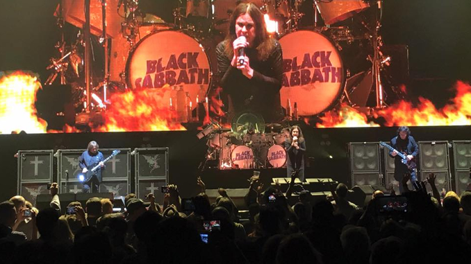

Quem Somos


Heavy metal (ou simplesmente metal) é um gênero do rock que se desenvolveu no final da década de 1960 e no início da década de 1970, em grande parte no Reino Unido e nos Estados Unidos. Tendo como raízes o blues-rock e o rock psicodélico (psicadélico, em português europeu), as bandas que criaram o heavy metal desenvolveram um som massivo e encorpado, caracterizado por um timbre saturado e distorcido dos amplificadores, pelas cordas graves da guitarra para a criação de riffs e pela exploração de sonoridades em tons menores, dando um ar sombrio às composições. O Allmusic afirma que "de todos os formatos do rock 'n' roll, o heavy metal é a forma mais extrema em termos de volume e teatralidade".
Heavy metal (ou simplesmente metal) é um gênero do rock que se desenvolveu no final da década de 1960 e no início da década de 1970, em grande parte no Reino Unido e nos Estados Unidos. Tendo como raízes o blues-rock e o rock psicodélico (psicadélico, em português europeu), as bandas que criaram o heavy metal desenvolveram um som massivo e encorpado, caracterizado por um timbre saturado e distorcido dos amplificadores, pelas cordas graves da guitarra para a criação de riffs e pela exploração de sonoridades em tons menores, dando um ar sombrio às composições. O Allmusic afirma que "de todos os formatos do rock 'n' roll, o heavy metal é a forma mais extrema em termos de volume e teatralidade".